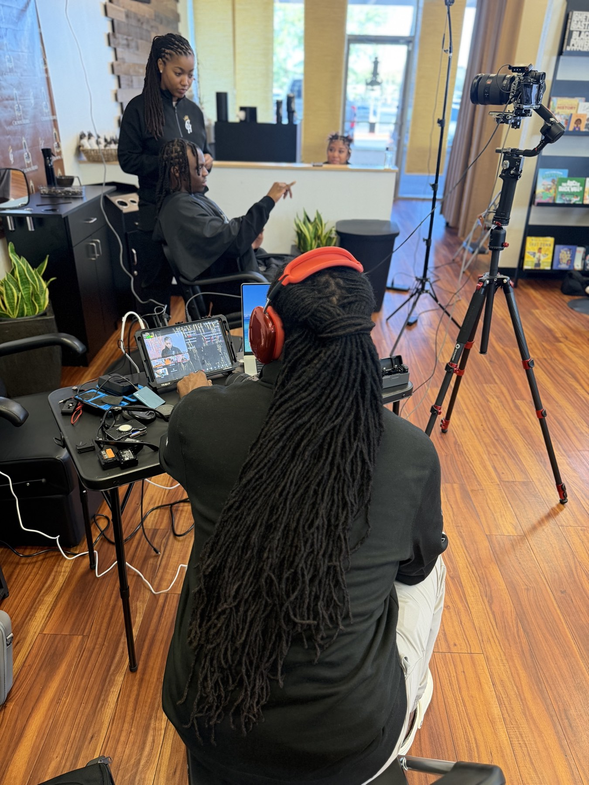

[Podcast Name TBD]
Conversations on wellness, nourishment, and living with intention.
Welcome to the Podcast
Each episode is a conversation about what it really takes to build sustainable wellness — not the quick-fix version, but the deep, rooted, lasting kind. From functional nutrition insights and hormone health to practical guidance for everyday nourishment, this podcast is your companion on the journey to feeling truly well.
[Podcast name, artwork, and platform links are placeholders — to be updated when finalized]
Latest Episodes
Why I Started House of Figs
In this first episode, Bethany shares the personal journey behind House of Figs — from her own wellness transformation to the meaning behind the name and the mission that drives everything she does.
The Truth About Quick-Fix Diets
Why do quick fixes feel so appealing — and why do they almost always fail? This episode unpacks the cycle of restriction and rebound, and offers a more sustainable path forward.
Eating for Energy, Not Just Calories
Calories tell one story. Energy tells another. Learn how to shift your focus from numbers to nourishment — and discover how the right foods can transform how you feel from morning to night.
Listener Q&A — Your Top Wellness Questions
Bethany answers real questions from listeners about gut health, meal planning for busy lives, supplements, hormonal changes, and how to get started when you feel overwhelmed.
Listen & Subscribe
Never miss an episode. Follow the podcast on your favorite platform.
[Platform links are placeholders — to be updated when podcast is live]
Carry the practice with you.
Fig·atry — the daily companion app from House of Figs. Free, no subscription.